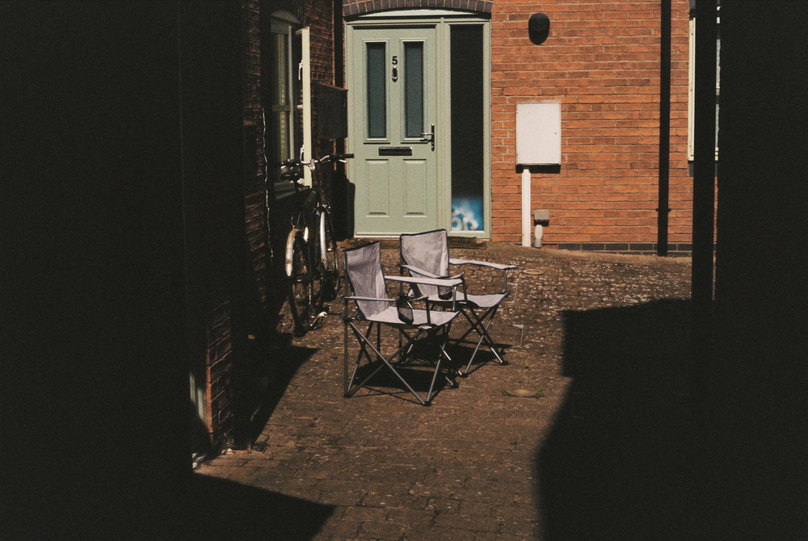
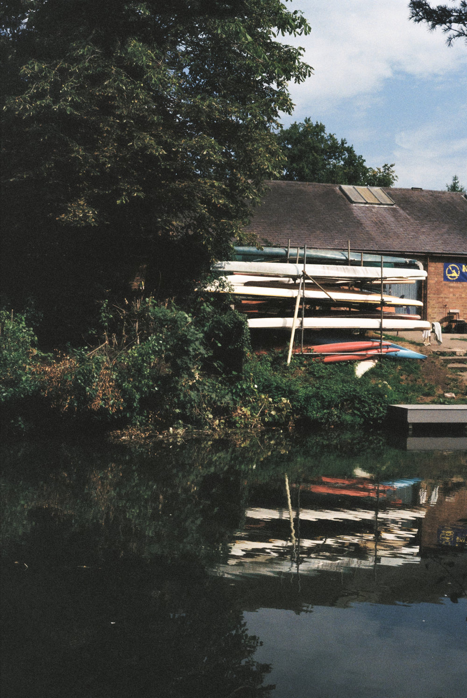

Photos

Lisbon, Portugal / Olympus μ[mju:]-I / Kodak Portra 400

Lisbon, Portugal / Olympus μ[mju:]-I / Kodak Portra 400

Lisbon, Portugal / Olympus μ[mju:]-I / Kodak Portra 400

Lisbon, Portugal / Olympus μ[mju:]-I / Kodak Portra 400

Lisbon, Portugal / Olympus μ[mju:]-I / Kodak Portra 400

Lisbon, Portugal / Olympus μ[mju:]-I / Kodak Portra 400

Unknown, Portugal / Olympus μ[mju:]-I / Kodak Portra 400

University of Warwick, United Kingdom / Olympus μ[mju:]-I / Kodak Gold 400

Birmingham, United Kingdom / Olympus μ[mju:]-I / Kodak Gold 200

Leamington Spa, United Kingdom / Olympus μ[mju:]-I / Kodak Gold 200

Leamington Spa, United Kingdom / Olympus μ[mju:]-I / Kodak Gold 200

Leamington Spa, United Kingdom / Canon AE-1P / 50mm f/1.8 / Kodak Gold 200

Kenilworth, United Kingdom / Canon AE-1P / 50mm f/1.8 / Kodak Gold 200

Leamington Spa, United Kingdom / Canon AE-1P / 50mm f/1.8 / Kodak Gold 200

Santa Lucia di Piave, Italy / Pentax Espio 738S / Kodak Gold 200